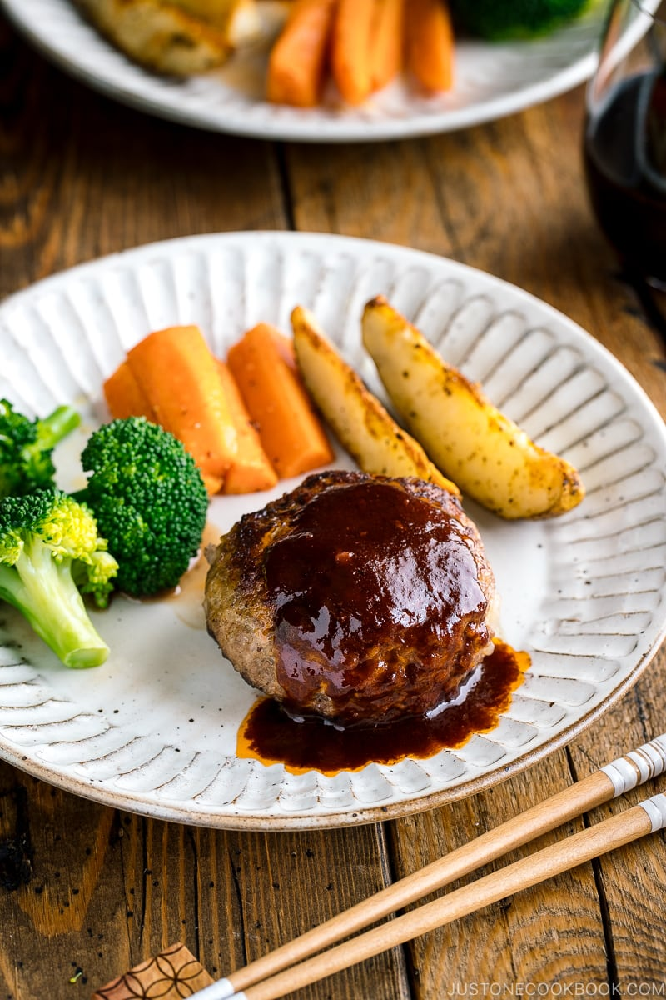

Hambagu Stake

Description
The Hambagu Stake is an interesting take on a German dish that took a twist when it was first brought over to
Japan. Delicious ground beef mixed with vegetables
and panko (japanese breadcrumbs), pan fried and served with a delicious sweet sauce and vegetables.
Ingredients
For the Hambagu Patties
- 1/2 onion
- 1 Tbsp neutral oil (canola, vegetable, etc.)
- 3/4 ground beef and pork combination (A good mix would be 2 to 1 beef to pork)
- 1/2 tsb kosher salt
- freshly grounded black pepper
- 1/2 tsp nutmeg
- 1/3 cup panko
- 2 Tbsp milk
- 1 large egg
For Cooking the Hambagu
- 1 Tbsp neutral-flavoured oil
- 3 Tbsp red wine for steaming (can substitute with beef/chicken stock)
For the Sauce
- 1 Tbsp unsalted butter
- 3 Tbsp tonkatsu sauce (can substitute with Worcestershire sauce with sugar)
- 3 Tbsp red wine
- 3 Tbsp water
Instructions
Making the Hambagu Patties
- Cut onions into small cubes
- Heat the oil in a large pan over medium heat and saute the onions until tender and almost translucent. Place
them on a bowl
- Once onions are cool, add beef and prok to the bowl. Add the salt and black pepper to taste, and the nutmeg
- Add the milk, panko, and egg
- Mix it all together with a spatula or a spoon
- Keep mixing by hand until its sticky and pale
- Divide the mixture into quarters and scoop each up for each portion
- Toss each portion between your hands to release any air inside the mixture
- Lastly, shape them into an oval-shapped patty and place them on a tray. Cover the patties with plastic wrap
and refrigerate them for at least 30minutes before cooking, so that the fat solidifies